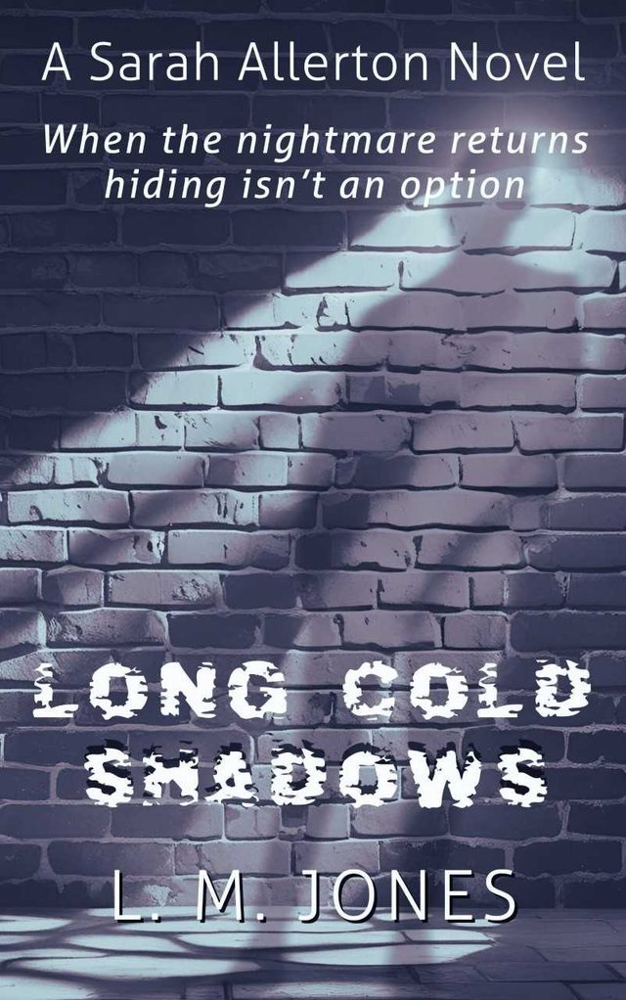
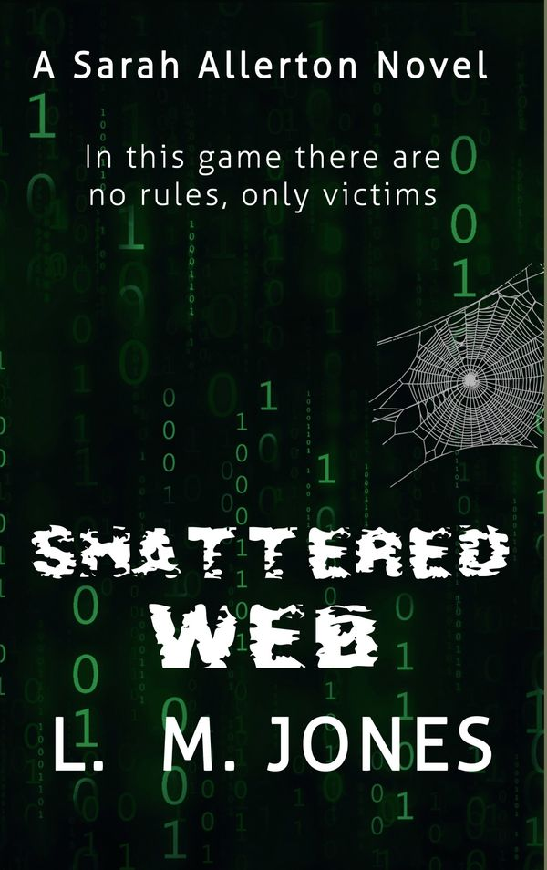
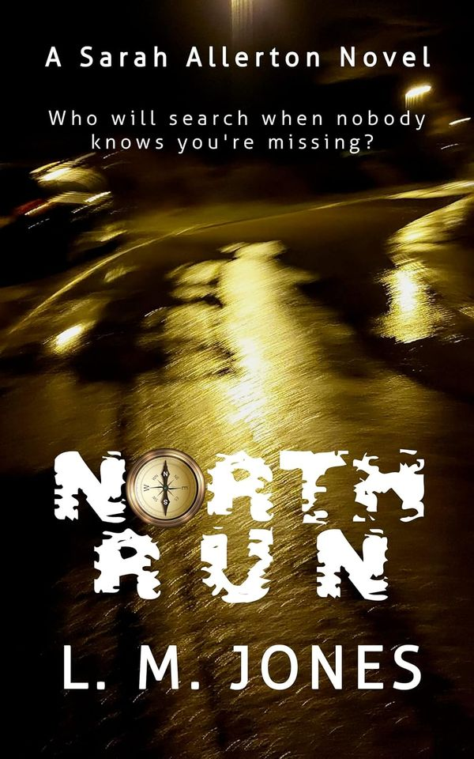

Sarah Allerton, book three
Long Cold Shadows
A body is discovered at an exclusive hotel, drawing DCI Sarah Allerton and her team into the perilous world of human trafficking where a life means zilch. The gangsters will do anything to protect their identities. No one is safe.
While probing the case, a cold shadow from Sarah’s past threatens to destroy her life. After seven long years, the Cambridge Serial Killer returns, determined to continue his spree of sadistic murders by threatening Sarah’s partner, the only one to escape his clutches.
A race to halt the serial killer’s reign of terror and protect all she holds dear.

Sarah Allerton, book two
Shattered Web
Sarah and Hepsford’s serious crime division are under pressure. A hacker is causing chaos, infecting the town’s top businesses with software viruses. People are trapped in computer-controlled buildings, overloading resources of the force’s cyber tech unit.
When a colleague’s mother dies in a supermarket the stakes are raised: they are dealing with murder. Racing to uncover the killer’s motives, Sarah and her team are dragged into the dark web by an adversary who thrives on manipulation, extortion, violence and death.
In this game there are no rules, only victims.

Sarah Allerton, book one
North Run
The city of Hepsford, East Yorkshire, and DI Sarah Allerton’s week is about to turn into a nightmare. Snowed under with several high-profile investigations, the last thing Sarah needs is another complication. Then her nemesis, DI Mike Lawson, dumps the Lee Wiggins case on her desk.
The fifteen-year-old has vanished from Lakeside Children’s home, along with a substantial amount of jewellery. Within hours witnesses are injured, others vanish and the body count rises.
Who will search when nobody knows you’re missing?
Not only crime
Linda also writes for younger readers: the Marmalade Orange picture books about one very naughty cat, and fantasy adventures with illustrator David Hailwood.
About Linda
Once upon a time I was a psychiatric nurse. Now I’m an independent author and publisher, with children’s books and, since 2022, crime novels.
I grew up in Newport, South Wales, on Welsh and Greek myths. My first love was Tolkien, my second is crime fiction, and I’m immersed in the bleak world of mystery where every character is an enigma.
Where to find me
Books are in independent bookshop The Book Dragon, on Amazon, and through Bavoom Publishing.